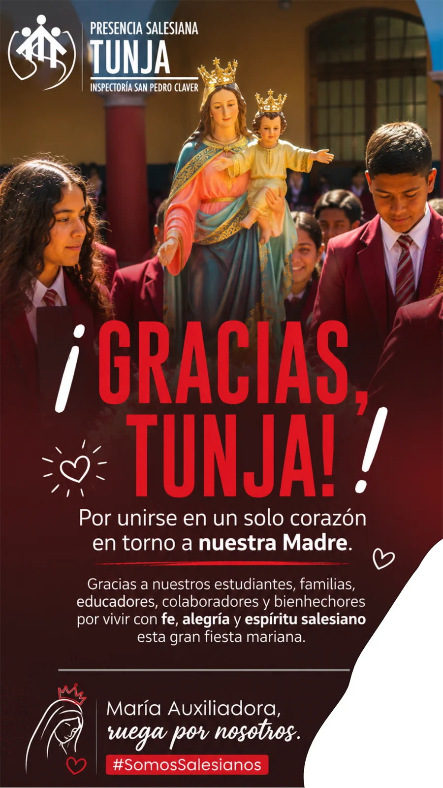

← Todos los proyectos
Comunicación · Redes sociales
Colegio Tunja
Diseño de una publicación para Instagram del Colegio María Auxiliadora, con enfoque en comunicación educativa.

SOBRE EL PROYECTO
Una publicación para conectar con la comunidad educativa.
La pieza final adapta un mensaje institucional al formato de redes sociales. El diseño reúne información y recursos visuales para presentar la comunicación del colegio en una sola publicación.